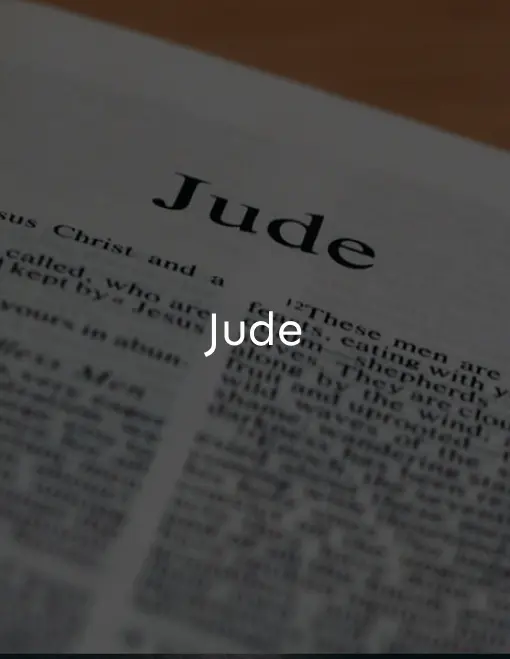

Religious
Esta Sección Está Dedicada A Textos Sagrados. Aquí Encontrarás Una Inspiradora Colección De Textos Sagrados, Estudios Teológicos, Reflexiones Espirituales Y Guías Prácticas Para Nutrir Tu Jornada Espiritual.
Aproveite!
-

St. Jude
The Epistle of Saint Jude.
Listen here!
is the penultimate book
of the
New Testament as well
as the Christian
Bible. -

St. Matthew
The Gospel of Matthew is the first book of the New Testament of the Bible and one of the three synoptic Gospels.
/ Listen Here!